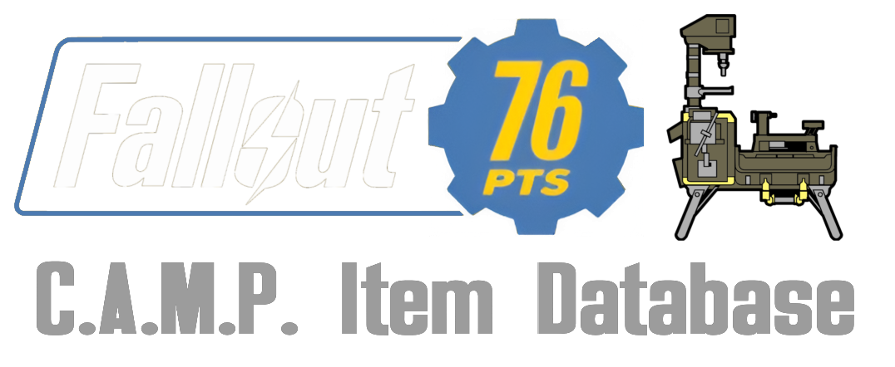
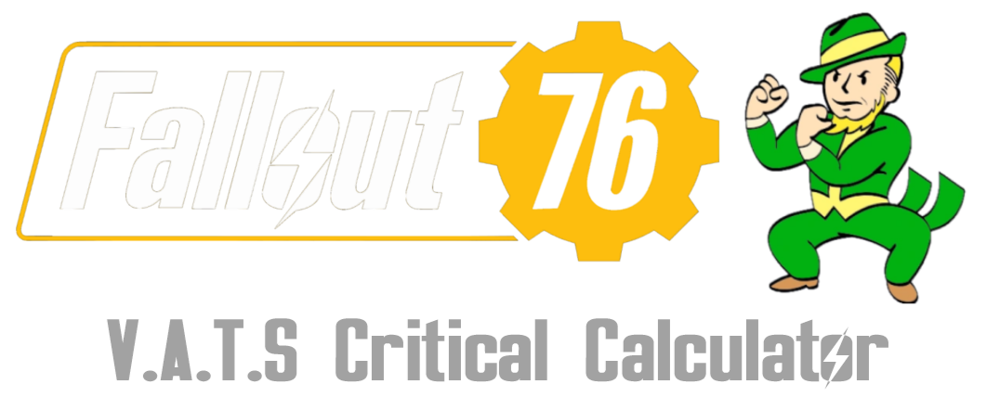

C.A.M.P. Item Database
Database Tool for Fallout 76 C.A.M.P. Items. Lists Workshop Menu categories, Plan/Entitlement/Challenge requirements, C.A.M.P. budget costs, and allows searches.
Visit Tool
Database Tool for Fallout 76 C.A.M.P. Items. Lists Workshop Menu categories, Plan/Entitlement/Challenge requirements, C.A.M.P. budget costs, and allows searches.
Visit Tool
Database Tool for Fallout 76 C.A.M.P. Items. Lists Workshop Menu categories, Plan/Entitlement/Challenge requirements, C.A.M.P. budget costs, and allows searches (PTS-specific).
Visit Tool
Desmos calculator to determine specific LCK value thresholds to achieve V.A.T.S. critical bar refills in X hits/misses, based on user-inputted variables. Calculator by me. LCK curve table values updated by Mapex.
Visit Tool